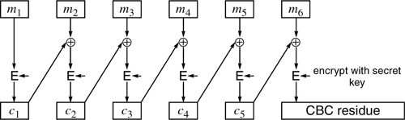
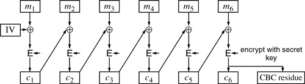
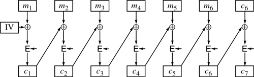
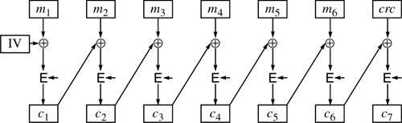

Networking Security Networking Security Networking Security Security Networking Security Networking Security Networking Charlie Kaufman Radia Perlman Mike Speciner Prentice Hall Network Security: Private Communication in a Public World, Second Edition
4.3. Generating MACs
A secret key system can be used to generate a cryptographic checksum known as a MAC (message authentication code). A synonym for MAC is MIC (Message Integrity Code). The term MAC seems to be more popular though MIC is sometimes used, for instance in PEM (see §21.15.3 MIC-ONLY or MIC-CLEAR, Public Key Variant). While CBC, CFB, OFB, and CTR, when properly used, all offer good protection against an eavesdropper deciphering a message, none offers good protection against an eavesdropper who already knows the contents of the plaintext message modifying it undetected.
A standard way for protecting against undetected modifications is to compute the CBC but send only the last block along with the plaintext message. This last block is called the CBC residue. In order to compute the CBC residue, you have to know the secret key. If an attacker modifies any portion of a message, the residue will no longer be the correct value (except with probability 1 in 264). And the attacker will not be able to compute the residue for the modified message without knowing the secret key.

In this case, the picture for the recipient of the message is the same as for the sender. The recipient computes the CBC residue based on the plaintext message and sees whether it matches the one sent. If it does, someone who knew the key computed the MAC on that message.
In many contexts, messages are not secret but their integrity must be ensured. In such contexts it is perfectly appropriate to transmit unencrypted data, plus a CBC residue. Interbank transfers are a traditional example (there may be a desire for secrecy as well, but it is dwarfed by the requirement for accuracy). But more commonly, there is a desire to encrypt messages for both privacy and integrity. This can be done with a single encryption operation if the message is a single block. What is the equivalent transformation on a multiblock message? (Keep reading to find out!)
4.3.1. Ensuring Privacy and Integrity Together
To summarize, if we have a message and we want to ensure its privacy, we can CBC-encrypt the message. If we have a message and we want to ensure its integrity, then we can send the CBC residue along with the message. It is natural to assume that if we want to be secure against both modification and eavesdropping that we ought to be able to do something like Figure 4-12.

Well, that can't be right. That consists of sending the CBC encrypted message and just repeating the final block. Anyone tampering with the CBC encrypted message could simply take the value of the final block they wanted to send, and send it twice. So sending the CBC residue in addition to the CBC encrypted message can't enhance security. Maybe simply sending the CBC encrypted message gives privacy and integrity protection. Well, when we say integrity protection we mean we'd like the receiving computer to automatically be able to tell if the message has been tampered with. With CBC alone there is no way to detect tampering automatically, since CBC is merely an encryption technique. Any random string of bits will decrypt into something, and the final 64 bits of that random string will be a "correct" CBC residue. So it is easy for anyone to modify the ciphertext, and a computer on the other side will decrypt the result, come up with garbage, but have no way of knowing that the result is garbage. If the message was an English message, and a human was going to look at it, then modification of the ciphertext would probably get detected, but if it is a computer merely loading the bits onto disk, there is no way for the computer to know, with this scheme, that the message has been modified.
OK, how about computing the CBC residue, attaching that to the plaintext, and then doing a CBC encryption of the concatenated quantity (Figure 4-13)?

It turns out that that doesn't work either. The last block is always the encryption of zero, since the  of anything with itself is always zero. An extra block that doesn't depend on the message can't offer any integrity protection. of anything with itself is always zero. An extra block that doesn't depend on the message can't offer any integrity protection.
Let's try one more. Suppose we compute a non-cryptographic checksum (e.g., a CRC) of the blocks of the message, append that to the end, and encrypt the whole thing (Figure 4-14).

This almost works. Subtle attacks are known if the CRC is short. Longer non-cryptographic checksums are suspect.
So, what can we do? It is generally accepted as secure to protect the privacy of a message with CBC encryption and integrity with a CBC residue as long as the two are computed with different keys. Unfortunately, this requires twice the cryptographic power of encryption alone. Various shortcuts have been proposed and even deployed, but generally they have subtle cryptographic flaws. Whether those flaws are serious depends on the application and the cleverness of the attacker. It's instructive to look at some of the techniques.
4.3.2. CBC with a Weak Cryptographic Checksum
Jueneman proposed [JUEN84, JUEN85] that since using non-cryptographic checksums inside CBC did not appear to be secure, and since quality cryptographic checksums were expensive to compute, perhaps a "weak" cryptographic checksum inside a CBC would provide good security on the basis that the computational complexity of breaking the weak checksum would be multiplied by the limitations of having to do it under the constraints of the CBC. He proposed a weak cryptographic checksum for this use.
There is no reason to believe that this approach would not be effective, but it has not caught on. Ironically, Kerberos V4 (see §13.10 Encryption for Integrity Only) uses a variant of his weak checksum for integrity protection outside of an encrypted message, and there is no evidence that anyone has broken it.
4.3.3. CBC Encryption and CBC Residue with Related Keys
It is generally accepted as secure to compute a message integrity code by computing a CBC residue and then encrypting the message using an independently chosen key. A trick used by Kerberos V5 is to use a modified version of the key for one of the operations. (Switching one bit should be sufficient, but Kerberos instead s the key with the constant F0F0F0F0F0F0F0F016. This has the nice properties of preserving key parity and never transforming a non-weak key into a weak key. See §3.3.6 Weak and Semi-Weak Keys.)
There are no known weaknesses in the approach of having one key be mathematically related to the other (as opposed to simply picking two random numbers for keys), but few advantages either. In general it's no harder to distribute a pair of keys than a single one, and having the keys be mathematically related saves no computational effort. The only advantage of deriving one key from the other is to get both privacy and integrity protection when a mechanism is in place for distributing only a single key.
4.3.4. CBC with a Cryptographic Hash
Another approach is to put a cryptographic hash of the messageÂtypically 128 bitsÂinside, and CBC encrypt the whole thing. This is probably secure (though it hasn't gotten much use or scrutiny, since modern schemes use a keyed hash). It requires two cryptographic passes (just like doing CBC encryption and CBC residue with different keys), but it is more efficient than doing CBC twice if the hash function is faster than the encryption algorithm.
4.3.5. Offset Codebook Mode (OCB)
OCB is one of several modes that get both encryption and integrity protection while making only a single cryptographic pass over the data. This and similar schemes are too new to have stood the test of time, and there are patent issues hanging over them, but it seems likely that one or more will eventually become the standard way to achieving this effect.
|